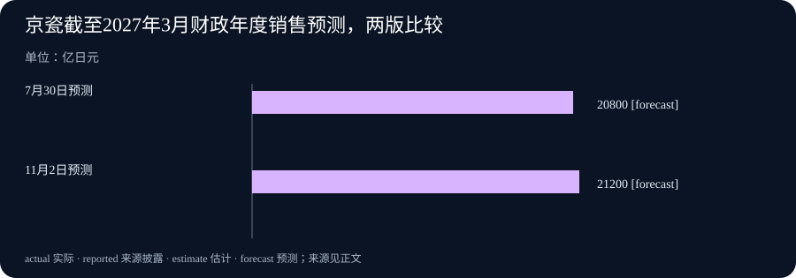

Daily Intelligence · 2026-11-03
信息边界：新闻研究截止于北京时间 2026 年 11 月 3 日 06:58:09，优先窗口为此前 24 小时，即 11 月 2 日 06:58:09 起。本期采用四条标注 11 月 2 日的一手消息。原文未提供足以独立核实首次公开小时的证据，均保留日期粒度，不声称全部已证实落在严格 24 小时内。发布时间、统计所属期及未来生效条件分别说明。
Today's Thesis
人工智能（AI）的扩展越来越需要回答怎样分配有限资源：模型思考与最终回答共用多少输出额度，计算园区何时为电网让出用电空间。企业经营也有类似约束：销售预期提高，利润未必同步提高；制造业调查转强，成本和交货压力仍可能存在。
Executive Summary
阿里云百炼公布接口兼容性调整：从下一款千问新模型上线起，一个常用输出上限将同时约束思考内容与最终回答，已有模型保持原行为。这是未来新模型的使用规则，没有公布新模型上线日期，也不能解释成模型能力提高。
OpenAI 启动“电网保护者”计划，准备让未来计算园区在电网紧张时降低用电需求。佐治亚州项目被用作先行例子，但园区仍在开发，现有协议也早于本次公告。本期新增事实是全国性计划，不能把既有承诺重新算成新建成的供电能力。
京瓷上调截至 2027 年 3 月的全年销售预测，营业利润预测保持不变。美国供应管理协会公布的 10 月制造业调查显示生产和新订单继续扩张，投入价格上涨仍较普遍。这四条消息都比最近两期增加了新披露，没有重复流程辅助生成、模型格式支持、韩国贸易或七国生产安排。
AI Daily
1. 百炼调整新模型输出上限，思考与回答使用同一份额度
阿里云百炼 11 月 2 日的兼容性公告说明，下一款 Qwen（千问）系列新模型上线后，max_tokens 将等同于 max_completion_tokens，限制思考内容和最终回答的词元总量。词元是模型处理文字的计数单位，不等于一个汉字；思考内容在这里指模型为推导答案生成的内容，不是新增输入材料。官方公告
接口，即应用与模型服务交换请求和结果的规则，本次改变的是其中一个上限如何计算。过去这个字段的范围会因模型和设置而不同；新规则下，开启思考时，它与最终回答共享输出额度。另一个字段的含义不变，已有模型的行为也不变。不能据此写成所有千问模型已经统一切换，更不能把这则公告当成下一款模型已经发布。
对使用者，变化意味着要重新理解“允许输出多少”这个设置。假设一个应用原本只按最终文章长度准备额度，换到新规则覆盖的模型后，还需考虑推导过程占用的部分。这是假设性的使用情景，不是本期测得的产品表现。实际回答是否完整、怎样报告用量，仍要对照具体模型说明和同一任务测试；公告本身没有承诺回答质量或费用会怎样变化。
2. OpenAI 推出电网协作计划，园区灵活用电仍待逐地落实
OpenAI 于 11 月 2 日推出 Grid Protectors Program，本期译作“电网保护者计划”。公司准备与电力企业、监管者和政策制定者协商，让未来计算园区在电网吃紧时降低需求。这里的计算园区是容纳大量服务器的设施；降低需求指在需要时少从电网取电，不等于建成了同样规模的新发电厂。OpenAI 原始公告
公司表示，要逐地商定能少用多少电、多久内响应、维持多长时间；具体设备和当地需要允许时，也会研究使用现场发电或储能。公告以仍在开发中的佐治亚州 Effingham 园区作先行例子，并重申承担项目所需电力服务与基础设施费用。全国计划已经宣布，其他地点的具体承诺仍需之后确认，不能把它写成全国设施已经能够随时让电。
作为明确标日期的背景，Georgia Power 在 7 月 22 日已经披露该项目最高 1,000 兆瓦的灵活需求响应安排，约合 100 万千瓦；“需求响应”就是按电网需要调整用电。这个功率上限不代表已节省的电量，且不属于 11 月新增协议。本期只用它解释计划的起点，不将其另算一条近期来源。电力企业 7 月原始公告
Business Daily
1. 京瓷提高全年收入预测，营业利润预期保持原值
日本京瓷 11 月 2 日披露，截至 2027 年 3 月 31 日的财政年度，销售收入预测由 2.08 万亿日元提高至 2.12 万亿日元，增加 400 亿日元，约 1.9%。同期营业利润预测仍为 1,600 亿日元。营业利润是扣除相关经营成本后的利润指标，与销售收入不是同一笔钱。公司预测修订原文
公司把收入预期上调与 AI、半导体相关零部件需求联系起来。利润方面，公司预计各业务盈利改善和化学业务转让收益等因素，将抵消上半年一次性成本的影响，因此维持原预测。这是管理层给出的解释和预期，不能直接推断已经抵消，也不能把全部销售增长都归因于 AI。
同日经营报告显示，截至 2026 年 9 月的六个月，销售收入约 1.078 万亿日元，同比增长 8.8%；营业利润约 656 亿日元，同比增长 56.4%。这些是已经披露的上半年结果；2.12 万亿和 1,600 亿则是全年预测，不能混为同一期间的实绩。公司报告与预测修订是同一次经营披露的补充材料，本期合并为一条主线。六个月经营报告
2. 美国制造业调查转强，价格压力仍在
美国供应管理协会（Institute for Supply Management，简称 ISM）公布 10 月制造业采购经理指数（PMI）为 55.5%，高于 9 月的 54.5%。采购经理调查汇总企业对订单、生产等变化的回答；这套指数以 50 为制造业扩张与收缩的方向分界，55.5%不表示工业产量增长了 5.5%。10 月原始报告
生产指数从 56.7 升至 59.0，新订单从 55.3 小幅升至 55.5。投入价格指数虽然由 77.9 降至 75.2，仍位于价格上升区间；它下降不表示原材料价格普遍下跌。交货指数超过 50 在这套调查中表示交货更慢，不能与其他分项一样简单理解成“越高越好”。
该报告描述 10 月美国企业的经营变化，11 月 2 日是本次披露日期。官方日历列出当天发布安排，正文也已实际公开；排期并不是本期实测的上传时刻，因此不额外声称精确到小时。问卷是及时信号，仍需与实际订单、生产和成本资料互相核对。官方发布日历
Macro Observation
京瓷的预测和美国制造业问卷，都显示部分需求仍有支撑，但不能把它们合成“所有企业经营全面改善”。一家公司的全年收入预期，覆盖它自身产品与成本；全国问卷则整理许多企业对一个月变化的回答。两者对象、时期和测量方式不同，不能用指数的点数推算公司的收入增幅。
同时，需求扩大并不自动消除资源约束。订单增加时，企业仍可能面对较高的投入价格和更长的交货时间；计算需求增长时，电网也需要提前安排容量和响应条件。这里是对经营机制的联系分析，不是在证明今天的电网计划导致了 10 月制造业变化，或已经改善京瓷利润。
Signal Dashboard
| 主线 | 已经明确的变化 | 尚需观察的条件 |
|---|---|---|
| 千问输出预算 | 公布下一款新模型适用的总输出计数规则 | 模型实际上线、具体文档与任务结果 |
| 电网协作 | 宣布全国计划，以既有佐治亚安排为起点 | 各地协议、园区投运与真实响应记录 |
| 京瓷经营 | 上调全年销售预测，维持利润预测 | 下半年成本、业务变化与最终结果 |
| 美国制造业 | 调查中的生产与订单保持扩张 | 实际产销、价格和交货资料 |
这些信号的单位不同：词元上限、功率安排、收入预测和调查指数不能相加为一个增长分数。
Deep Insight
需求增加以后，谁来保留余量
今天值得深入理解的，不只是需求是否继续增长，而是为了交付结果，需要为哪些环节保留空间。模型输出、用电系统与企业经营使用不同资源，却都可能出现同一种误读：把总额看成每个部分都可以完整使用的额度。把范围写清楚，会直接改变使用和判断的方法。
模型的总输出限制，是一个接近普通读者的例子。若额度只约束最终文章，用户比较容易按希望得到的篇幅设置；若推导与成文共享额度，就必须同时考虑两部分。假设一项任务有一百个抽象单位的总空间，前面的推导占用了其中一部分，留给成文的空间便相应减少。这里的一百只是帮助解释共享关系，不是千问的参数建议，也不表示词元能直接换成固定中文字数。更重要的问题是，应用能否识别结果是否完整，并在任务要求与可用资源之间作调整。
用电安排中的余量则具有时间性。一个设施在电网紧张的一小时少取电，与全年少用相同功率，是不同说法。功率描述某一时刻使用电的快慢，电量还要结合持续时间计算。因此，最高可降低多少兆瓦，需要同时回答多久能开始、能维持多长、之后怎样恢复。没有这些条件，就无法把一个上限换成全年节约的电量或每户用户得到的收益。未来园区能否灵活调整，还要看任务安排、设备和当地协议；本期没有足够证据描述它将怎样迁移任务或停止训练。
财务预测又让“余量”落到经营成本。销售额增加，营业利润不变，说明同一份预测没有把新增收入原样传递到利润；但仅凭这一组总数，也不能反过来断言每一笔新增订单都不赚钱。不同业务、一次性项目和成本发生时间，可能共同影响公司整体结果。读者需要回到公司提供的分项解释，再等待后续实绩，而不是从一组收入和利润预测推算整个行业的盈利规律。
问卷中的资源压力也应按含义阅读。生产方向更强与价格仍上涨可以同时成立，价格指数下降则可能只是上涨没有那么普遍。交货更慢有时伴随需求增加，却仍给采购安排带来难度。对企业而言，更有效的回应是核对自己面对的交付日、报价和库存，而不是看到综合指数提高，就把所有约束都划去。
由此可以形成一个具体的跟踪顺序：先确认资源上限覆盖谁，再确认它在什么时间和条件下可用，最后观察实际交付。这个顺序能帮助我们提出更好的问题，却不能代替结果本身。今天的公告分别补上了规则、计划、预测和调查；下一步要看的，是这些安排进入使用后留下的记录。
Tomorrow Watch
千问方面，等待下一款新模型的正式说明，特别是实际适用的参数行为和用量反馈；本期没有证据说明它明天必定发布。电网方面，追踪新增地点是否给出可执行条件，以及既有园区何时形成运行记录，不重复累计旧协议的功率。
经营方面，继续关注京瓷下一阶段结果与全年预测是否一致。美国制造业调查则需要与后续同口径资料对照；官方日历安排 11 月 4 日披露服务业调查，这是预定发布，不是已经取得的服务业结果。
One Chart
京瓷全年销售预测提高，营业利润预测维持原值

图中只比较同一个财政年度的销售收入预测：7 月 30 日版本为 20,800 亿日元，11 月 2 日版本为 21,200 亿日元，增加 400 亿日元。原表以百万日元计，分别为 2,080,000 和 2,120,000，换算后数值含义不变。图中的 forecast 表示“预测或计划”，并非已经实现的收入。京瓷原始预测表
营业利润预测仍为 1,600 亿日元，本图没有把利润当成销售额的一部分，也没有将六个月实绩与全年预测放在一起比较。两版预测之差约为原预测的 1.9%，它表示管理层调整幅度，不是已经实现的全年销售增速。
Quote of the Day
原文节录：
Heard melodies are sweet, but those unheard Are sweeter;
中文译文：听得到的乐曲很美，听不到的更美。
人物：John Keats（约翰·济慈）
出处：《希腊古瓮颂》（Ode on a Grecian Urn）第二节，第 11—12 行开头；本期参照 1820 年诗集收录文本，保留跨行与分号。原文可见多伦多大学图书馆校录及版本说明，也可在济慈 1820 年诗集的原文转录中对照。
上下文：诗人面对古瓮上的人物与乐器，想象画面中永远听不到的音乐，思考艺术中的美与时间。编辑解读：这段诗适合作为想象力的表达来阅读，不把它改造成“未来计划一定比现实更好”的经营判断，也不冒充诗人对现代技术的评论。
Action Items
- 输出上限究竟包括什么？ 在相关新模型实际开放后，核对思考与回答的计数范围，再用同一任务检查文章完整性和用量反馈。
- 让电承诺能维持多久？ 关注园区协议时，同时记录可降低的功率、响应速度、持续时间和投运状态，避免把上限直接写成年节电量。
- 收入提高为何没有带动利润预测？ 阅读京瓷披露时分开记录销售、经营成本与一次性因素，并等待对应期间的实际结果。
- 指数下降意味着价格下跌吗？ 先查调查对象与方向分界，再对照真实报价；不要把价格指数的回落直接当成采购成本已下降。
- 哪项新记录值得更新判断？ 为今天每条主线选一个后续依据，例如正式参数说明、运行响应记录或财报实绩，再决定是否调整自己的安排。